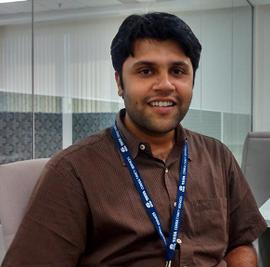

Shibaji Chakraborty
Research Scientist
Space & Atmospheric Instrumentation Lab (SAIL)
Embry-Riddle Aeronautical University · Daytona Beach, FL
- Email chakras4@erau.edu
- Phone +1 (540) 739-0127
- ORCID 0000-0001-6792-0037
- GitHub shibaji7
- Languages English, Bengali
I am a Research Scientist at the Space and Atmospheric Instrumentation Lab (SAIL) at Embry-Riddle Aeronautical University. My research focuses on understanding how transient solar events — flares, coronal mass ejections, and solar eclipses — impact the Earth's Magnetosphere-Ionosphere-Thermosphere (MIT) system.
I combine ground-based HF radar observations (SuperDARN network), satellite data, physics-based simulations (WACCM-X, TIE-GCM), and machine learning to characterize space weather impacts on radio communications, navigation systems, and critical infrastructure. I am Lead PI on an NSF-funded collaborative investigation of eclipse-driven ionospheric dynamics and co-investigator on multiple NASA awards.
Prior to ERAU, I was a Postdoctoral Associate at Virginia Tech (2021–2024), where I received my Ph.D. in Electrical Engineering (2021) and M.A. in Data Analytics (2020). Before academia, I spent nearly five years as an IT Analyst at Tata Consultancy Services Innovation Labs.
Beyond space physics, I am expanding into broader data analytics and complex systems, and writing for general audiences about science that matters — from solar superstorms to the hidden vulnerabilities of global internet infrastructure.
Solar Flares & HF Radio
Shortwave fadeout, Doppler flash, ionospheric sluggishness
Geomagnetic Disturbances
GICs in submarine cables, SCUBAS model, infrastructure risk
Solar Eclipse Ionosphere
EUV response, TID generation, NSF-funded multi-eclipse study
ML for Space Weather
Probabilistic Kp forecasting, neural networks, uncertainty quantification
SuperDARN Radar
HF backscatter, ionospheric electrodynamics, high-latitude physics
Atmospheric Gravity Waves
TIDs, thunderstorm-ionosphere coupling, NASA LWS program
-
2026
Paper published: pynasonde: An open-source Python library for ionosonde data processing. SoftwareX, 34, 102617. [DOI]
-
Mar 2026
Paper published: Global impacts of ultra-low-frequency waves: 1. Thermospheric responses and traveling atmospheric disturbances. Geophysical Research Letters. [DOI]
-
2025
Google Unrestricted Research Award (GARA): PI — “Quantifying Geomagnetically Induced Voltages in Global Submarine Cables Using the SCUBAS Model.”
-
Mar 2025
Paper published: Formation of the ionospheric G-condition following the 2017 Great American Eclipse. Earth and Space Science. [DOI]
-
Jan 2025
Paper published: Severe weather-generated acoustic and gravity wave impacts on the ionosphere. JGR Space Physics. [DOI]
-
2024
NSF Award PI: Collaborative investigation of ionospheric density response to American solar eclipses (Award #2412294, 2024–2027).
-
2024
NSF-GEM Award PI: Modeling ionospheric and magnetospheric current interactions with submarine cables (2024–2027).
-
Sep 2024
Joined Embry-Riddle Aeronautical University as Research Scientist in the SAIL group under Dr. Aroh Barjatya.
-
2022
JSPS Fellowship: Japan Society for Promotion of Science Postdoctoral Fellowship (Short-term), ISEE — Nagoya University, Japan.
-
2021
Best Paper: IEEE/WiSEE Best Conference Paper Award — Probabilistic Short-wave Fadeout Detection in SuperDARN Time Series.
-
1
Chakraborty, S., Nishitani, N., et al. (2025). Solar Flare-Induced Gradient Drift Instability Observed by SuperDARN HF Radars. Journal of Geophysical Research: Space Physics.
-
2
Chakraborty, S., Qian, L., et al. (2025). Formation of the ionospheric G-condition following the 2017 Great American Eclipse. Earth and Space Science.
-
3
Chakraborty, S., et al. (2022). Modeling geomagnetic induction in submarine cables. Frontiers in Physics.
-
4
Chakraborty, S., et al. (2022). Driving influences of the Doppler flash observed by SuperDARN HF radars in response to solar flares. JGR Space Physics.
-
5
Chakraborty, S., et al. (2021). Ionospheric Sluggishness: A Characteristic Time-Lag of the Ionospheric Response to Solar Flares. JGR Space Physics.